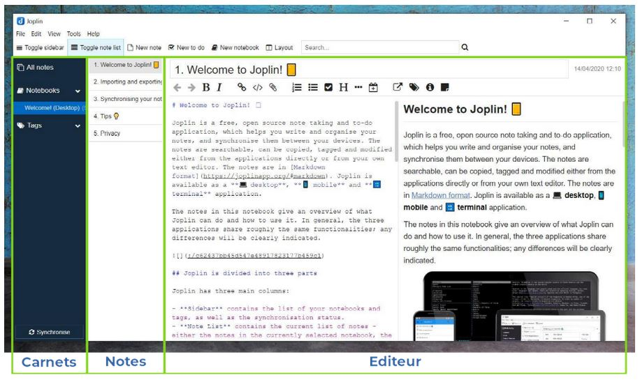

Joplin

Joplin est une application de prise de notes avec des très nombreuses fonctionnalités.
C’est un logiciel open-source et entièrement gratuit qui permet de créer des notes dans le langage d’écriture “Markdown,” en les classant dans des “carnets” (notebooks), et en les associant avec des étiquettes (tags). Il est une excellente alternative à des logiciels tels que Evernote ou Microsoft One Note.
Fonctionnalités de Joplin
Joplin permet d’énormément faciliter son organisation, en remplaçant en un seul endroit tout besoin de post-its, de carnets de notes ou de listes de taches.
En particulier, Joplin vous permet de :
- Rassembler toute information écrite ou graphique au même endroit : Vos notes de cours, vos réflexions, vos projets, vos recettes de cuisines, vos listes de courses, vos listes de taches, etc.
- Retrouver toutes ces informations très rapidement (en quelques secondes) grâce aux outils de recherche.
- L’utiliser sur tous types d’ordinateur (Windows, Mac, Linux) et sur tous les téléphones (android, IOs).
- Synchroniser vos données sur le cloud que vous choisissez : Nextcloud (voir plus loin), Google Drive, One Drive, etc. Vous pouvez donc avoir toutes vos données écrites partout, tout le temps, sur tous les supports.
- Sécuriser tous vos textes en les encryptant avec un mot de passe.
- Avoir une interface totalement personnalisable qui permet de vous concentrer totalement sur ce que vous écrivez pour ne pas perdre de temps.
- D’exporter vos notes de pleins de manières possible, avec un format (le markdown) lisible partout et en tout temps.
- Gérer automatiquement les images et les fichiers que vous insérez dans vos notes
- Versionner vos notes automatiquement (pour revenir en arrière n’importe quand si vous avez fait une bêtise).
- Et bien plus encore.
Le Markdown

Le markdown est une syntaxe d’écriture facile à lire et à écrire pour formatter du texte qui est très utilisée aujourd’hui. Au passage, sachez que le document de cet atelier est écrit en markdown !
La syntaxe markdown se compose d’un set de règles qui permettent d’indiquer comment est-ce que le texte doit être formaté dans un format texte “classique” lisible par tous les éditeurs de texte. Le texte sera ensuite formaté par un logiciel pour le lire, ou bien pour en faire un document à publier ou à partager.
Voici quelques exemples qui vous permettra de mieux comprendre la syntaxe Markdown :
En markdown, indiquer qu’un mot est en gras s’écrit :
Le mot **markdown** est en gras.
Cela rend l’apparence suivante quand mis en forme par un logiciel comme Joplin :
Le mot markdown est en gras.
Indiquer un lien s’écrit :
Un lien vers la [page wikipédia](https://fr.wikipedia.org/wiki/Markdown) du markdown.
Ce qui donne :
Un lien vers la page wikipédia du markdown.
Pour en savoir plus sur la syntaxe markdown, vous pouvez visiter la page wikipédia correspondante, qui contient de nombreux exemples. Mais ne vous inquiétez pas : Joplin vous propose de nombreux outils et examples pour ne pas avoir à apprendre cette syntaxe.
Les avantages du Markdown sont nombreux :
- Un document Markdown est un document texte qui peut s’ouvrir avec n’importe quel éditeur de texte (bloc note, Notepad++, Atom, etc.).
- Éditer un document en markdown permet de se concentrer sur le sens de ce que l’on écrit, sans se préoccuper de l’apparence : c’est la philosophie “Ce que vous voyez et ce que vous voulez dire” (What you see is what you mean). Cette philosophie est à l’opposé du “ce que vous voyez est ce que vous obtiendrez” que l’on retrouve dans des logiciels comme Microsoft Word, dans lequel on édite à la fois le contenu du document et son format en même temps.
- Un document Markdown peut être lu de différentes manières par les logiciels de mise en page (qui sont très nombreux), qui peuvent le transcrire en pleins de format différents (.pdf, .html, etc.) et avec des apparences différentes (police d’écriture, couleurs, etc.) très rapidement.
À lire tout cela, si vous ne connaissez pas encore le Markdown, vous êtes sûrement sceptiques. Mais ne vous inquiétez pas : Joplin permet de passer outre le Markdown si vous ne l’aimez pas. Mais vous verrez que l’essayer, c’est généralement l’adopter.
Installation de Joplin
- Rendez-vous simplement sur la page web du logiciel
- Choisissez la version correspondant à votre système d’exploitation : Windows, Mac ou Linux.
- Lancez l’installateur et suivez les instructions.
💡 Si vous souhaitez avoir l’interface en français, pensez à indiquer “français” comme langue durant l’installation. Si vous ne l’avez pas fait, vous pourrez changer la langue dans “Tools” puis “Options” puis “General.”
Prise en main de Joplin
Interface
Par défaut, la fenêtre de Joplin se compose de 3 parties importantes :
- la liste de vos carnets (notebooks) tout à gauche
- la liste des notes à l’intérieur du carnet ou vous vous trouvez, au milieu
- l’éditeur à droite, qui s’affiche généralement en deux partie (la partie édition, et la partie visualisation).

L’essentiel
Ce qu’il faut savoir pour comprendre l’essentiel du fonctionnement de Joplin :
- Les carnets peuvent contenir des notes, ou d’autres carnets.
- Les notes sont écrite en syntaxe markdown.
- Les notes peuvent êtres associées à une ou plusieurs étiquettes, qui vous permettent de les retrouver plus facilement
- L’éditeur vous montre à la fois le document écrit en langage Markdown (a gauche), et son apparence une fois mis en forme par le thème de Joplin que vous avez choisis (à droite).
- L’éditeur contient différents boutons pour mettre en forme le texte en Markdown facilement (en gras, en italique, lien, liste, titre, etc.).
- Joplin contient un carnet avec quelques notes vous récapitulant toutes les fonctionnalités du logiciel; ne les supprimez pas ! Elles pourront vous êtres très utiles.
- Avec la commande
Ctrl + P, vous accédez à la barre de recherche qui vous permet de trouver une note en quelques secondes. Tapez juste des mots liés à la note.
Exercices
Il me serait possible de vous faire la liste de toutes les fonctionnalités de Joplin; mais cela serait très long à lire (il y en a beaucoup), et plutôt ennuyeux. Par le biais de quelques exercices, je vous encourage à les découvrir par vous même.
1. Créer un carnet
- Dans Joplin, créez un nouveau carnet, nommé “📔 Carnet pour exercice.”
💡 Notez la possibilité de mettre des emojis dans les titres de vos carnets et de vos notes pour mieux les différencier.
2. Créer une note
- Dans le “Carnet pour exercice,” créez une nouvelle note nommée “Note pour exercice” avec le bouton
Nouvelle note.
3. Insérer une image dans une note
- Ouvrez la note “Note pour exercice” dans l’éditeur.
- Rendez vous sur ce lien.
- Dans votre navigateur, faite un clic droit sur l’image, et choisissez
Copier. - Retournez dans votre note. Faite un clic droit dans l’éditeur et choisissez l’option
Coller, ou bien faiteCtrl + V.
{kind=link}
💡 Joplin gère tous les fichiers associés à vos documents Markdown automatiquement, que ce soit une image, un tableur excel, ou autre. Il n’est capable d’afficher que des images, et les autres types de fichiers seront représentés sous la forme d’un lien qui vous permettra de les ouvrir. Tous les fichiers sont gardés dans sa base de donnée, et il est même possible de les éditer en cliquant sur le lien. Extrèmement pratique pour s’y retrouver !
4. Créer une tache et une liste de tache
- Dans le “Carnet pour exercice,” créez une nouvelle tache nommée “Tache de l’exercice 4” avec le bouton
Nouvelle tache.
💡 Dans Joplin, les taches sont simplement des notes qui sont associées à une cache à cocher. Cependant, vous pouvez, comme pour toute note, y associer des fichiers, des images, et du texte.
- Dans l’éditeur, écrivez les choses suivantes (attention de bien respecter les espaces !) :
- [ ] Faire une nouvelle tache dans Joplin
- [ ] Écrire une liste de tache dans le texte Markdown de cette tache
- [ ] Cocher les cases de cette liste de tache
- [ ] Cocher la tache- Regardez au texte de votre tache mis en forme dans la droite de l’éditeur. Cliquez sur les différentes cases à cocher, et regardez ce qui se passe.
- Quand cela est fait, cochez votre tache à cocher dans la fenêtre des notes de Joplin. Regardez ce qui se passe.
💡 Vous avez découvert l’une des fonctionnalités les plus utiles du Markdown : les cases à cocher. Dans le format texte, une case non-cochée s’écrit “
- [ ],” et une case cochée s’écrit “- [x].”
5. Utiliser des étiquettes
- Donnez à la note “Note pour exercice” l’étiquette “Exercice” en trouvant ajoutant une étiquette avec le bouton correspondant en bas de l’interface.
- Observez qu’une nouvelle catégorie d’étiquette est apparue dans le menu des carnets.
💡 Les étiquettes sont extrèmements pratiques pour retrouver facilement ses notes. Trier ses notes en les mettants dans différents carnets peut être utile; mais comme on ne peut mettre une note que dans un seul carnet, cela reste limité. Mettriez vous une note avec des idées de cadeaux d’anniversaire pour une amie dans votre carnet “amis,” ou dans votre carnets “idées” ? Avec des étiquettes, la question ne se pose plus : vous pouvez mettre les deux. Je vous conseille d’utiliser des étiquettes autant que possible !
6. Changer l’interface
- Allez dans l’onglet
Affichage, puis cliquez sur l’optionChanger la composition de l’application. - Utilisez les flèches qui se trouvent sur chaque partie de l’interface pour :
- Mettre l’éditeur tout à gauche de l’interface.
- Mettre la liste des carnets en dessous de la liste des notes dans le carnet ouvert.
- Cliquez sur les limites entre les sections de l’interface pour les mettre à une taille raisonnable.
- Appuyez sur
Echappour sortir de l’outil pour changer la composition de l’application. - Laissez l’interface comme elle est, remettez la comme avant, ou bien mettez la comme vous le préférez !
7. Télécharger un plugin
- Allez dans l’onglet
Outils, puis cliquez surOptions. - Allez dans l’onglet
Pluginsdu menu des options. - Dans la barre de recherche, cherchez le plugin
Quick Linkset installez le. - Dans la barre de recherche, cherchez le plugin
Note Tabset installez le. - Redémarrez Joplin grace au petit menu qui vous indique de le redémarrer pour que les plugins fonctionnent; ou bien, arrêtez Joplin complètement (fermer la fenêtre n’arrête pas Joplin par défaut), et relancez le.
- Réalisez les étapes de l’exercice 6 pour adapter votre interface aux onglets ajoutés par le plugin
Note Tabs. - Si vous souhaitez enlever les onglets ajoutés par le plugin
Note Tabs, rendez vous dans le menuPluginsà nouveau, et utilisez le bouton dédié pour désactiver le pluginNote Tabs.
8. Insérer des liens vers d’autres notes
- Dans le “Carnet pour exercice,” créez une seconde note nommée “Note vers laquelle faire un lien.”
- Retournez dans la note “Note pour exercice.”
- Dans celle-ci, écrivez le texte suivante dans l’éditeur :
Ici, je vais faire un lien vers une autre note :
- Complétez ce texte avec un lien vers la note “Note vers laquelle faire un lien.” Pour ce faire, vous avez deux choix :
- Dans la fenêtre des notes, faites un clic droit sur la note “Note vers laquelle faire un lien,” et choisissez l’option “copier le lien Markdown.” Collez ensuite ce lien dans votre texte.
- Profitez du plugin Quick Links que vous avez installé : tapez
@@dans votre texte, puis choisissez la note “Note vers laquelle faire un lien” dans la fenêtre d’autocomplétion qui s’ouvre.
- Une fois le lien insérez, regardez la partie de l’éditeur qui vous montre votre notre mise en forme. Un lien s’y trouve. Cliquez dessus, et il vous amènera vers l’autre note.
9. Exporter une note
- Faites un clic droit sur la note “Note pour exercice” dans la fenêtre des notes. Choisissez l’option
Exporter, puisPDF. - Sauvegardez le
.pdfdans votre ordinateur, et ouvrez le.
Autres fonctionnalités importantes de Joplin à découvrir
Joplin dispose d’un très grand nombre de fonctionnalités. Il serait trop long de vous les faire toute découvrir lors de cet atelier. Je vous recommande de jeter un oeil à trois d’entre elle en particulier quand vous aurez le temps :
- La synchronisation avec un cloud. Cela vous permet de retrouver toutes vos notes n’importe ou, y compris dans votre téléphone portable grace à l’application Joplin qui est gratuite, et elle aussi open-source.
- L’encryption, qui vous permet d’encrypter vos notes pour que vous soyez le/la seul.e a pouvoir les lire.
- La modification de l’apparence de Joplin et de la mise en forme de vos documents depuis le texte en Markdown.
Pour toute autre informations, vous pouvez aller vous renseigner sur le site de Joplin, sur sa page GitHub, ou dans son forum.